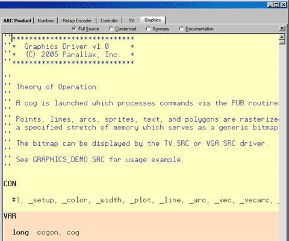
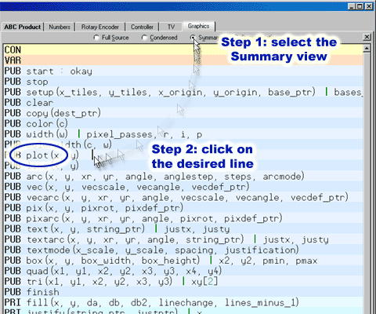
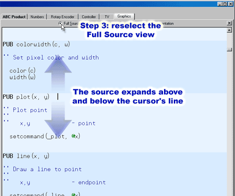

While developing objects, or conversing about them with other users, it may sometimes be difficult to quickly navigate to certain regions of code simply because of the size of the file itself or because large sections of code and comments obscure the desired section. To address this, each edit tab can display an object’s source in one of four view modes: 1) Full Source, 2) Condensed, 3) Summary, and 4) Documentation.
By briefly switching to another view you may be able to locate the routine or region of code desired. For example, the Step 1 figure below shows the Graphics object open in an edit page. If you were having trouble finding the “plot” routine within the source code, you could switch to the Summary view (Step 2) locate the “plot” routine’s header line and click the mouse on that line to place the cursor there, then switch back to Full Source view (Step 3). Keep your eye on the line with the cursor because the code will expand to full view above and below the line where the cursor is.
Can’t find a routine in an object?


Step 1: Select Summary Mode
Step 2: Click on the routine’s line.

Step 3: Select Full Source mode again; the code re-expands around the cursor’s line, or Double-click on the desired line from Step 2.
The view mode can be changed a number of ways; see the Shortcut Keys listings. For example, while in any view mode other than Full Source, pressing the Escape key will take you back to Full Source view. While in Condensed or Summary view modes, double-clicking on a line will switch back to Full Source view; expanding above and below that line. Also, the view mode bar items act like a toggle so that clicking on the Summary item switches back and forth between Summary view and the previous view mode.
Propeller Help Version 1.2
Copyright © Parallax Inc., dba Parallax Semiconductor
6/17/2011